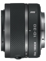

器材库 > APS画幅镜头 > 1 NIKKOR VR 10-30/3.5-5.6

详细规格
镜头类型
标准变焦镜头
发布日期
2011-09-21
厂家推荐价格
25,200.00 （日元）
焦距
10mm-30mm
等效35mm画幅焦距
27mm-81mm
最大光圈
f/3.5-5.6
最小光圈
f/16
视角（对角）
77°~29.67°
镜头结构
12片/9组
非球面镜片
3片
光圈叶片
7片
最近对焦距离
20cm
最大放大倍率
0.21倍
滤镜口径
40.5mm
镜头卡口
Nikon 1
防抖
是
颜色
银色, 黑色, 红色, 粉红色, 白色
尺寸
57.5×42mm
重量
115g
上帝武装2013-08-25 11:024.08 分
操作性 4.00耐用性 4.00性价比 4.50解像力 4.00色彩还原 4.00机械结构 4.00
outwind2013-08-16 11:344.75 分
操作性 5.00耐用性 4.50性价比 5.00解像力 4.50色彩还原 5.00机械结构 4.50
dreamwave2012-05-28 20:524.17 分
操作性 4.00耐用性 4.00性价比 4.50解像力 4.50色彩还原 4.00机械结构 4.00
Pantrol2012-02-01 17:384.5 分
操作性 5.00耐用性 5.00性价比 4.00解像力 4.00色彩还原 4.00机械结构 5.00
慈心色胆2011-12-21 12:253.42 分
操作性 3.50耐用性 3.50性价比 4.00解像力 3.00色彩还原 3.00机械结构 3.50
产品图 / 样片
1 NIKKOR VR 10-30/3.5-5.6
评测 / 相关文章
该产品暂无存档的评测文章
相关文章
- ［资讯］尼康公布Nikon 1系列镜头固件 （存档）
- ［试用］Nikon 1相机镜头使用体会 （存档）
- ［试用］Nikon 1系统两机四头日本九州行 （存档）
- ［资讯］尼康全球发布首款EVIL相机及附件 （存档）
- ［影像］尼康全新1系列相机样片赏析 （存档）
- ［资讯］尼康 1 NIKKOR VR 10-30/3.5-5.6 （原站已下线）